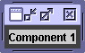
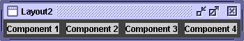
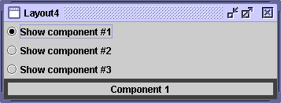

Feedback Form
|
|
Start of Tutorial > Start of Trail > Start of Lesson |
Search
Feedback Form |
In each of the following questions, choose the layout manager(s)
most naturally suited for the described layout. Assume that the
container controlled by the layout manager is a JPanel.
[Hint: Two sections that might help are A
Visual Index to Swing Components and Tips
on Choosing a Layout Manager.]
1. The container has one component that should take up as much space as possible
 
a.
BorderLayout
b.GridLayout
c.GridBagLayout
d. a and b
e. b and c2. The container has a row of components that should all be displayed at the same size, filling the container’s entire area.

a.
FlowLayout
b.GridLayout
c.BoxLayout
d. a and b3. The container displays a number of components in a column, with any extra space going between the first two components.


a.
FlowLayout
b.BoxLayout
c.GridLayout
d.BorderLayout4. The container can display three completely different components at different times, depending perhaps on user input or program state. Even if the components’ sizes differ, switching from one component to the next shouldn’t change the amount of space devoted to the component.

a.
SpringLayout
b.BoxLayout
c.CardLayout
d.GridBagLayout
1. Implement the layout described and shown in question 1.
2. Implement the layout described and shown in question 2.
3. Implement the layout described and shown in question 3.
4. Implement the layout described and shown in question 4.
5. By adding a single line of code, make the program you wrote for Exercise 2 display the components from right-to-left, instead of from left-to-right.


|
|
Start of Tutorial > Start of Trail > Start of Lesson |
Search
Feedback Form |
Copyright 1995-2004 Sun Microsystems, Inc. All rights reserved.